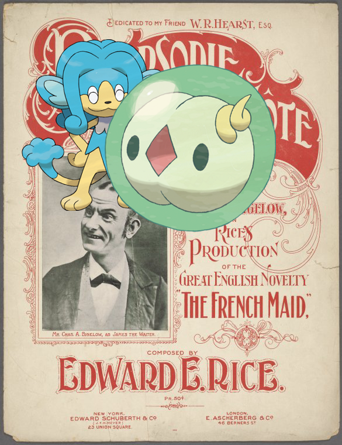

-
Buneary, Mr-Mime ; Cyrus Griffin the president of the last Cont. Congress.
-
Cresselia, Chimecho @ Delesseria ruscifolia..
-
Skrelp, Tyrogue – Nelson, Horatio. To the printers of the Norfolk Chronicle
-
Swinub – Neutitschenein.!
-
Suicune | My little Jungle Queen
-
Deino @ Hugh Gaine receipt book!
-
Metapod, Stunfisk ; Waldorf Astoria
-
Vulpix on I. D. Tweed Ring, 1874-1875!
-
Darmanitan-Standard @ BREAKFAST [held by] CUNARD LINE [at] "R.M.S. ""LUCANIA""" (SS;)
-
Swellow, Houndoom on The Blackstone!
-
Swellow + La mer ; Hirondelles..
-
Totodile @ Letter to --
-
 Smoochum, Grovyle | Philadelphia!
Smoochum, Grovyle | Philadelphia! -
Kirlia | Cashmere scarf end.!
-
Simipour, Solosis | Rhapsodie table d'hôte
-
Goodra ; EM9054.2
-
Aurorus – Hon. William Heath
-
Carracosta + Letter to Col. McMinn [Knoxville]!
-
Fraxure – Letter to -- -- Robertson, Charleston!
-
Chingling | Text.
-
Mawile, Silcoon @ View of the great chain of the Andes.
-
Regigigas + Tables of postages. [continued]!
-
Exeggutor – Germany, Prussia, 1746-1756!
-
Cacturne + Letter to the Select Men of Boston
-
Chinchou, Azelf + France, 1790-1801!
-
Quilladin | Great Britain. England, 1799.!
-
, Gengar @ Le capi-aga, ou chef des eunuques blancs.
-

-
 Greninja ; Ozark mountaineer, Arkansas.
Greninja ; Ozark mountaineer, Arkansas. -
Venipede on Uhlan 1859-1867!
-

-
 Rapidash – Mosaik-Bänder in der Markus-Kirche zu Venedig!
Rapidash – Mosaik-Bänder in der Markus-Kirche zu Venedig! -
 Barboach, + John Witherspoon.
Barboach, + John Witherspoon. -
 Poochyena, Krookodile @ Ma says I can't go for a ride.
Poochyena, Krookodile @ Ma says I can't go for a ride. -
![Bulbasaur – [W-W]. http://digitalcollections.nypl.org/items/29f14e60-c6c5-012f-d164-3c075448cc4b](media/finding-tcuWaKRd.png) Bulbasaur on [W-W].
Bulbasaur on [W-W].